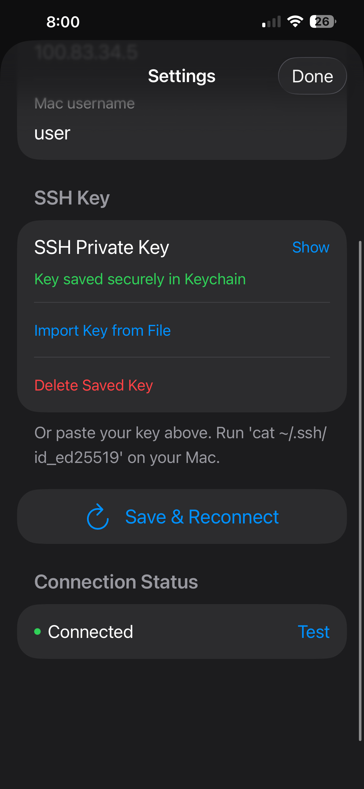
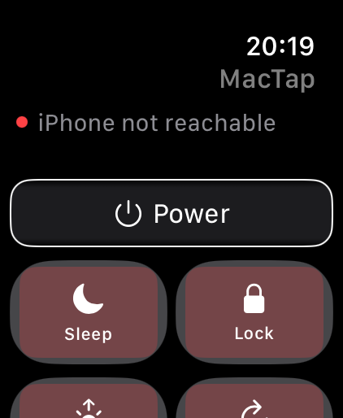
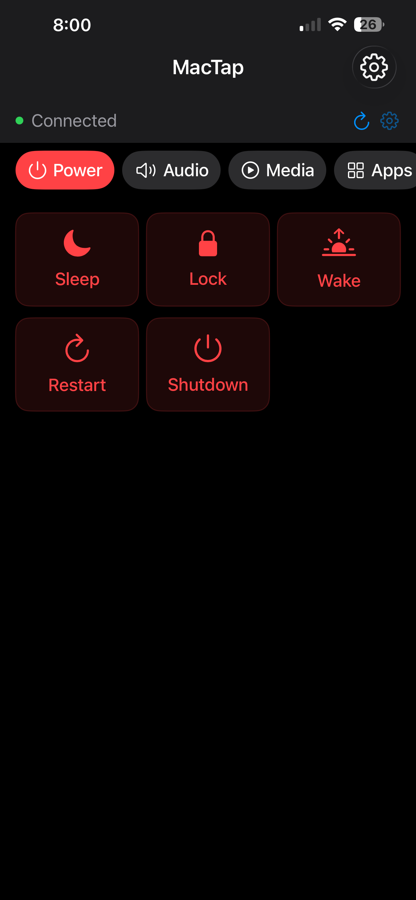
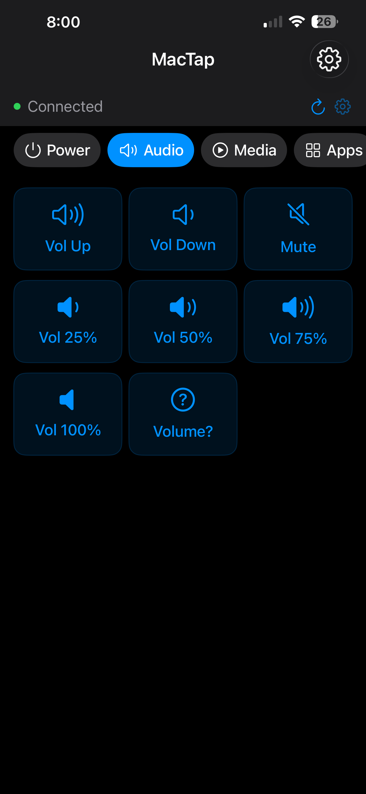
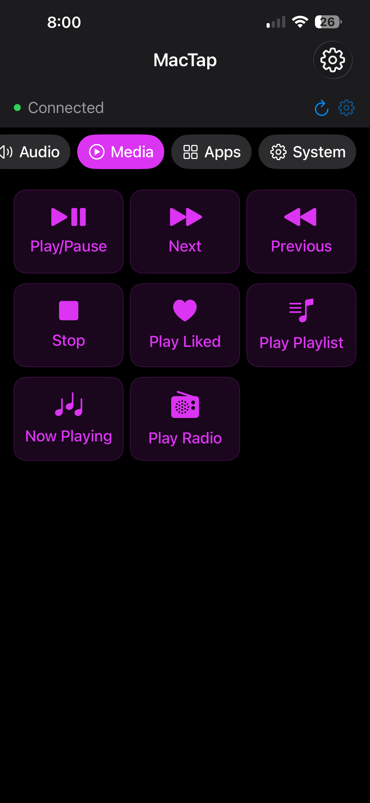
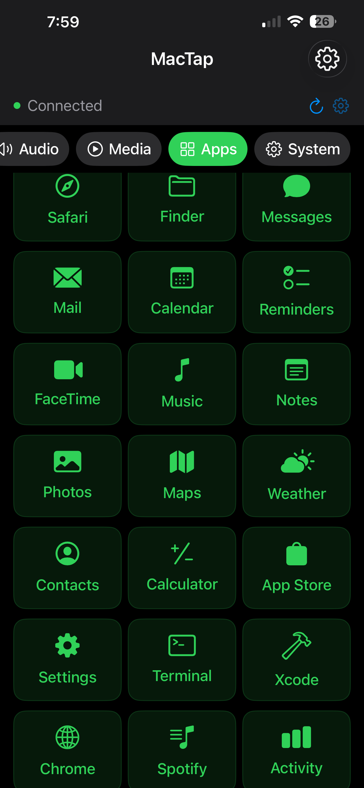
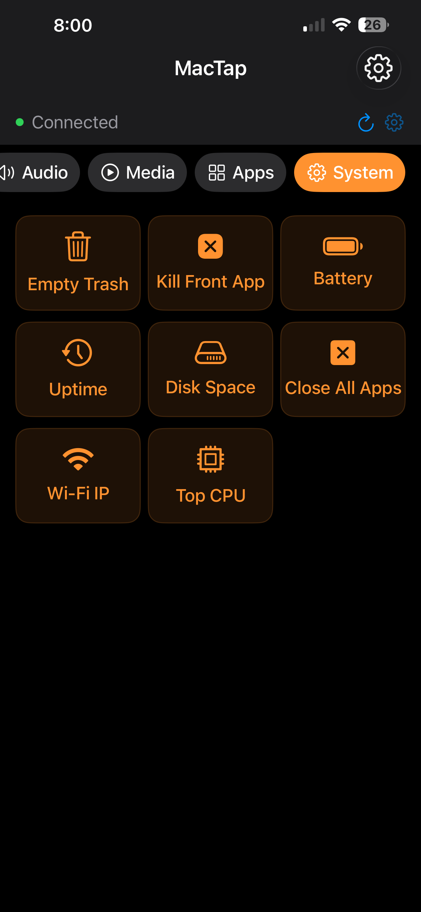

A 5-minute setup guide that finally fixes the "same WiFi only" problem.
Search the App Store for "Mac remote" and you get a long list of apps that all do roughly the same thing — and all break the moment you leave your home WiFi. They use Bonjour discovery on the local network, which is fast and zero-config but completely useless from a coffee shop, an office on a different floor, a hotel room, or another country.
That's a real limitation. The most useful Mac remote scenarios are exactly the ones where you aren't at home: pausing music your Mac is playing while you're in a meeting room three floors up, locking your Mac after you've left the house, restarting it from a different city, controlling it during a presentation when your laptop is plugged into a projector. None of those work over Bonjour.
This guide walks through a setup that solves it: Tailscale (a private mesh network that gives your Mac a stable IP reachable from anywhere on Earth), plus SSH (the same protocol you use for any remote terminal session), plus MacTap (an Apple Watch and iPhone app that wraps it all in a one-tap interface). Setup takes about five minutes. After that, your Mac is one wrist tap away regardless of where you are.
Total time: about 5 minutes once everything is downloaded.
Tailscale is the foundation. It assigns each of your devices a stable private IP address (something like 100.64.1.5) that's reachable from any of your other Tailscale devices, regardless of network. Free for up to 100 personal devices, no payment details required.
From this point on, your iPhone can reach your Mac at that Tailscale IP regardless of which WiFi or cellular network it's on. The Tailscale tunnel is always available in the background.
SSH (the protocol MacTap uses to send commands) is built into macOS but turned off by default. You need to flip the switch in System Settings.
Your Mac will now accept SSH connections. Note your Mac's username — you'll need it in Step 5. (You can find it in System Settings → Users & Groups, or by running whoami in Terminal.)
SSH uses key-pair authentication: a private key stays on your iPhone (in the iOS Keychain), and a public key is added to your Mac's authorized list. Once that's done, your iPhone can connect without a password.
You don't need to touch the Terminal. MacTap handles key generation in-app:
Now you need to authorize the public key on your Mac. The simplest way:
echo "PASTE_PUBLIC_KEY_HERE" >> ~/.ssh/authorized_keys
chmod 600 ~/.ssh/authorized_keysRun those two lines in Terminal on your Mac, replacing the placeholder with the public key MacTap copied. That's the only Terminal command in the entire setup.
Back in MacTap on your iPhone, fill in the connection details:
100.64.1.5)Tap Connect. MacTap establishes an SSH session over Tailscale and shows a green status pill once connected. If it doesn't connect, the most common causes are:
~/.ssh/authorized_keys (Step 4)
If you have an Apple Watch paired with the iPhone where MacTap is installed, the Watch app installs automatically. Open it and you'll see a list of preset commands. Tap any one — your Mac executes it within a second.
The Watch doesn't need its own Tailscale client or SSH connection. Commands relay through your iPhone via WatchConnectivity (a built-in Apple framework), and the iPhone handles the SSH session. As long as your iPhone and Watch are within Bluetooth range — about 10 metres, or anywhere on the same WiFi — the Watch works.






| Category | Commands |
|---|---|
| Power | Sleep, Lock, Wake, Restart, Shutdown |
| Audio | Volume up/down, Mute, jump to 25/50/75/100%, current level |
| Media | Play/Pause, Next, Previous, Stop, shuffle library, playlist picker, now playing |
| Apps | Launch Safari, Finder, Messages, Mail, Calendar, Music, Notes, Xcode, Chrome, Spotify, and 11 more |
| System | Empty Trash, kill front app, battery, uptime, disk space, Wi-Fi IP, top CPU process |
| Radio | 23 free internet radio stations across 9 genres |
The "anywhere" thing isn't theoretical — here are the situations MacTap actually gets used for:
Three layers, all independent:
| App | Works off home WiFi? | Setup | Cost |
|---|---|---|---|
| Bonjour-based "Mac Remote" apps (most of the App Store) | No — same WiFi only | Zero config | $0–$5 |
| Splashtop (screen mirroring) | Yes (their relay) | Account, paid plan for cellular | $5/month+ |
| Apple's Screen Sharing / Back to My Mac | Limited — same iCloud network | Built-in | $0 |
| Remote Desktop Manager + manual port forwarding | Yes | Router config, security risk | Free / paid tiers |
| MacTap + Tailscale | Yes, anywhere on Earth | 5 min, no port forwarding | One-time $29.99 |
Yes. Because MacTap uses Tailscale instead of local network discovery, it works on cellular, public WiFi, hotel networks, and any other internet connection your iPhone is on.
Idle. Tailscale's iOS client doesn't drain noticeable battery when you aren't actively using it — under 1% per day in typical use. It only does work when there's active traffic.
If your Mac is fully asleep (lid closed on a laptop, no power), MacTap can't wake it remotely — this is a macOS limitation, not a MacTap one. But if you have Wake for network access enabled (System Settings → Energy Saver → Network) or your Mac is plugged into power, it stays reachable. MacTap shows a clear "connecting…" state and times out cleanly if the Mac doesn't respond, so you're not left guessing.
Each command exchanges a few hundred bytes of SSH traffic. A full day of heavy use is well under 1 MB. Negligible on any modern data plan.
Yes — three independent layers: Tailscale's WireGuard encryption, SSH key authentication with the private key in iOS Keychain, and no third-party servers in the data path. See the Why this is secure section above for the detail.
Yes. The iPhone app has the full command library. Apple Watch is the hero interface but optional.
Yes. Tailscale automatically rebuilds the tunnel as your iPhone's network changes. You won't need to reconnect manually.
Your private key is in the iOS Keychain, protected by Face ID / passcode / iCloud Keychain encryption. If your phone is lost, the standard iOS Find My / remote wipe flow handles it. As an extra layer, you can revoke the device from your Tailscale admin console — that immediately cuts off network access from the lost device.
MacTap is a one-time $29.99 purchase. No subscription. No servers. No recurring costs.
Get MacTap on the App Store